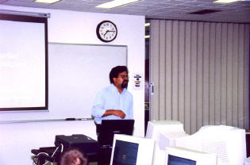
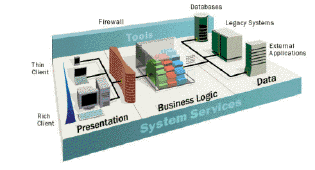
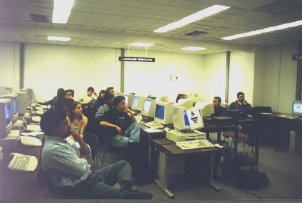
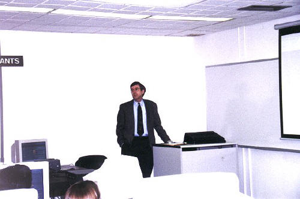
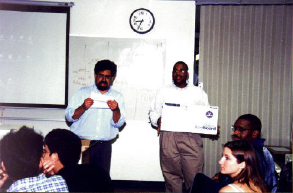
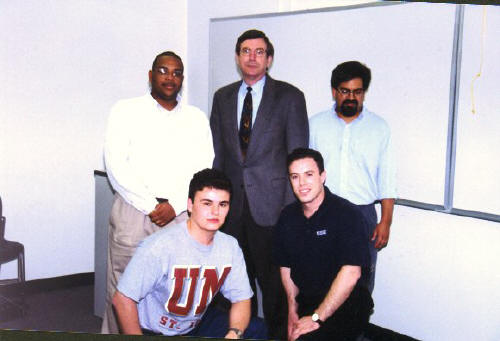
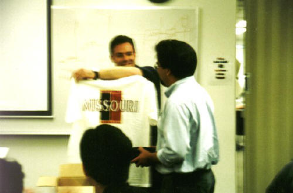

04/27/1999
The IS Programming club held its first meeting on April 27, 1999 with a guest
speaker from Microsoft. Mauro Torres - a senior consultant from Microsoft
Consulting - presented Windows Distributed InterNet Applications Architecture
(Windows DNA) to the group of more than 20 students and faculty members who
gathered for the Club's first meeting.
Windows DNA is the application development model for the Windows platform. I
t unifies the best of the services available on personal computers, application
servers and mainframes, the benefits inherent in client-server computing and
Internet technologies around a common, component-based application architecture.
The meeting started with a foreword by David Bird who described the Club's
goals and structure. Brian Lawton expanded on the future activities of the Club
and presented the guest speaker.
At the end of the presentation, Mauro Torres gave out prizes in random
drawings. Prizes included a Microsoft Natural Keyboard and various Microsoft
software. Every participant received a free evaluation edition of Microsoft's
SQL Server 7.0, a CD sampler of the MSDN library and a Windows DNA mouse pad.

Mauro Torres presents Windows DNA.

Windows DNA

First meeting of the club.

David Bird talks about club goals.

Mauro Torres gives out prizes from Microsoft.

After the presentation.

Brian Lawton presents Mauro Torres with UMSL gifts.